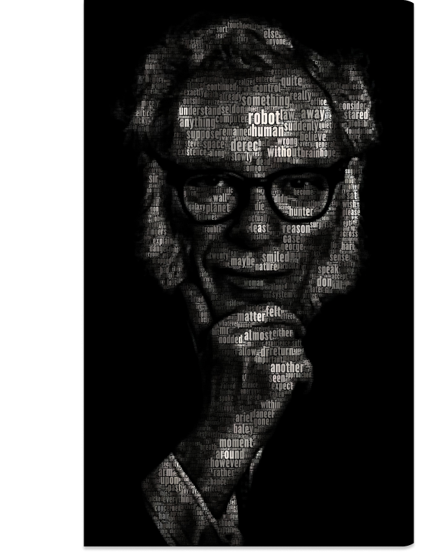

Forward the Foundation
Forward the Foundation continues the chronicles of the life of Hari Seldon, first begun in Prelude to Foundation. The story takes place on Trantor, and begins eight years after the events of Prelude to Foundation. It depicts how Seldon develops his theory of psychohistory from hypothetical concept to practical application, and its application in the Seldon plan.

The Gods Themselves
In the twenty-second century Earth obtains limitless, free energy from a source science little understands: an exchange between Earth and a parallel universe, using a process devised by the aliens. But even free energy has a price. The transference process itself will eventually lead to the destruction of the Earth's Sun--and of Earth itself.

Robot Vision
Robot Visions is a collection of science fiction short stories and factual essays by Isaac Asimov. Many of the stories are reprinted from other Asimov collections, particularly I, Robot and The Bicentennial Man and Other Stories. It also includes the title story, "Robot Visions" which combines Asimov's motifs of robots and of time travel. It is the companion book to Robot Dreams.

Nemesis
The novel is set in an era in which interstellar travel is in the process of being discovered and perfected. In Chapter 2, the novel states that the year 2220 was 16 years ago. Accordingly, the bulk of the novel takes place in or around the year 2236. Before the novel's opening, "hyper-assistance", a technology allowing travel at a little slower than the speed of light, is used to move a reclusive space station colony called Rotor from the vicinity of Earth to the newly discovered red dwarf Nemesis. There, it takes up orbit around the semi-habitable moon Erythro, named for the red light that falls on it.

Foundation
Foundation is a cycle of five interrelated short stories, first published as a single book by Gnome Press in 1951. Collectively they tell the early story of the Foundation, an institute founded by psychohistorian Hari Seldon to preserve the best of galactic civilization after the collapse of the Galactic Empire.

The Caves of Steel
A faction of Spacers have come to the realization that Spacer culture is effete, stagnating due to negative population growth and longevity. Their solution is to encourage further space exploration and colonization by Earthmen in concert with robots. However, Earthmen would first need to overcome their irrational antagonism toward robots. To this end, they have established habitations on Earth through which they hope to introduce humanoid robots to Earth.

The Early Asimov
In the late 1930s a new young talent began to make his mark on the science fiction scene with a succession of outstanding stories in the various SF magazines of the time. His name: Isaac Asimov. He was later to become world-renowned as the author of such classics of modern science fiction as the epic FOUNDATION trilogy and the robot stories in which he formulated the now famous Three Laws of Robotics.

Robots and Empire
The Earthman Elijah Baley has died nearly two centuries earlier. During these two centuries, Earth-people have overcome their agoraphobia and resumed space colonization, using faster-than-light drive to reach distant planets beyond the earlier "Spacer" worlds. Their inhabitants, calling themselves "Settlers" rather than "Spacers", revere Earth as their mother-world.